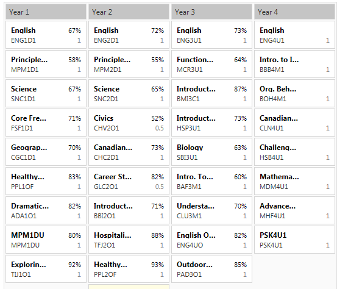

Here are my marks for grade 9, 10 and 11. The column that says "Year 1" indicated my grade 9
marks. Year 2, 3 and 4 are my grade 10, 11 and 12 grade marks
respectively. Any subject that doesn't have a grade beside it means i have not
written my final exam for that course. I am currently in Grade 12 and to get ahead I took 2 summer school courses - grade 12 Math which I
got 75% and grade 12 English which I got 82%. I will be graduating in 2016
from White Oaks Secondary School but as i mentioned I may take a gap year to improve both my hockey and scholastic marks which would mean I would graduate in 2017.

Looking ahead...
When I think about what I want to do as a career I'm leaning towards
something in the health sciences (e.g. kinesiology) or Business.
This will be something that I will have to figure out in the next year
or so.